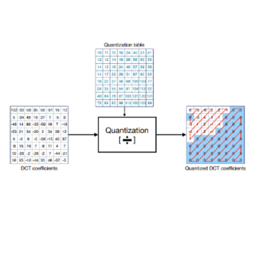

Understanding Lossless Image Compression
1. Color Image Conversion
Because human eyes are more sensitive to brightness than colour, compression on color is less affect original image content. this process is to separate the colors in the photos to luminance, blue chrominance and red chrominance instead of red, blue and green, therefore we can just make compression on blue chrominance and red chrominance.
Calculate a new value for Y (luminance) , Cb(blue chrominance) and Cr(red chrominance) following this formula
This process is reversible, and no data is removed
2. Chrominance Downsampling
Take Cb and Cr and divide component images into a 2x2 block of pixel
Calculate the average value for each block
Remove the repetitive information and shrink the image so each average value of 4 blocks can represent a single pixel.
Significantly reduce the image size.
3. Discrete Cosine Transformation (DCT)
Human eyes are not good at perceiving high frequencies elements
Divide the image into 8x8, each with 64 pixels, valued from 0 – 256, represent the luminance, blue chrominance and red chrominance
Shift each value by subtracting 128
Combine the base images and time their coefficients to rebuild the similar image.
4. Quantization
Divide each value using the quantization table corresponding to the position and round the result to the closest integer
The quantization will have a higher number at the bottom right corner and a lower number at the top left corner

5. Run length and Huffman Encoding
List the number using a zig-zag pattern
Using ren length algorithm to list the data, if there are lots of duplicate, just state the number and the frequency instead of the list out all the data
Reference
- https://www.youtube.com/watch?v=Kv1Hiv3ox8I&pp=ygUbaW1hZ2UgY29tcHJlc3Npb24gYWxnb3JpdGht
- https://www.youtube.com/watch?v=Ba89cI9eIg8&pp=ygUbaW1hZ2UgY29tcHJlc3Npb24gYWxnb3JpdGht
- https://www.cloudflare.com/learning/performance/glossary/what-is-image-compression/